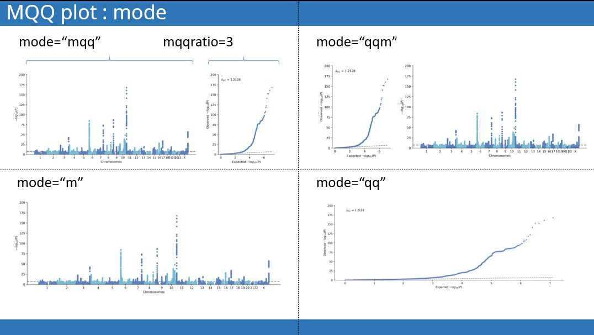
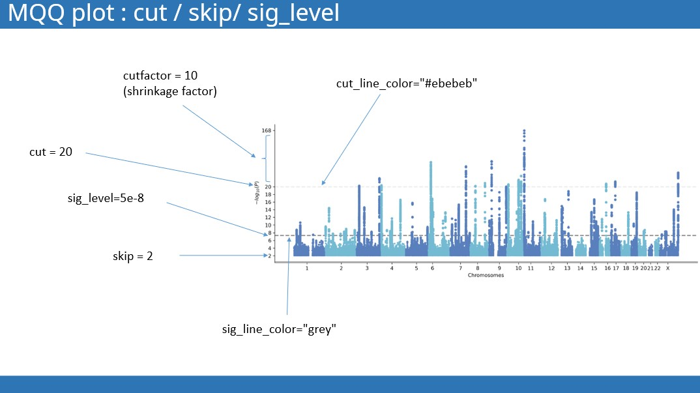

Visualization
-
Manhattan and QQ plot (MQQ plot)
-
Scatter plot: Effect size comparison
-
Heatmap: Genetic correlation matrix
-
Scatter & Distribution plot : allele frequency comparison
Manhattan plot and QQ plot
import gwaslab as gl
mydata = gl.Sumstats(....)
mydata.plot_mqq(
snpid=None,
scaled=False,
eaf=None,
cut=0,
cutfactor=10,
mode="mqq",
mqqratio=3,
cut_line_color="#ebebeb",
windowsizekb=500,
anno=None,
sig_level=5e-8,
sig_line_color="grey",
suggestive_sig_level=5e-6,
stratified=False,
maf_bins=[(0, 0.01), (0.01, 0.05), (0.05, 0.25),(0.25,0.5)],
maf_bin_colors = ["#f0ad4e","#5cb85c", "#5bc0de","#000042"],
highlight = [],
highlight_color ="#33FFA0",
highlight_windowkb = 500,
pinpoint=[],
pinpoint_color ="#f55142",
title =None,
mtitle=None,
qtitle=None,
figargs= {"figsize":(15,5)},
fontsize = 10,
colors = ["#000042", "#7878BA"],
use_rank=False,
verbose=True,
repel_force=0.03,
title_pad=1.08,
gc=True,
save=None,
saveargs={"dpi":400,"facecolor":"white"},
log=gl.Log()
)
Manhattan and QQ plot layout
mode : determine the layout of manhattan plot and qq plot.
"mqq"or "qqm": side-by-side manhattan and QQ plt.
-
mqq: left manhatan, right QQ -
qqm: left QQ , right manhatan -
"m": only manhattan plot -
"qq": only qq plot
mqqratio: width ratio

Skip "low" and shrink "high"
skip : sometimes it is not necessary to plot all variants, we can skip the insignicant variants . For example, we can exclude varints with -log10p lower than 3 from the plot by specifying skip=3
cut : loci with extremly large -log10(P) value are very likely to dwarf other significant loci , so we want to scale down the extrame loci from a certain threshold.
cutfactor: shrinkage factor, default is 10
cut_line_color: the color of the line above which y axis is rescaled

Annotation with chr:pos or a given column
anno: True or a list
if anno == True: the variants to annotate will be selected atomatically using a sliding window with windowsize=500 (kb).
if anno="col_name":
if a list is provided:
repel_force : when the annotation overlaps with other, try increasing the repel_force to increase the padding between annotations.
anno_set: if you want to annoatte only a few specific variants, you can simply provide a list of SNPIDs.
Highlight specified loci
Highlight specified loci.
highlight : specify the lead variants of loci for highlighting.
highlight_color: specify the color ussed for highlighting.
highlight_windowkb : specify the span of highlighted region ( in kp)
Pinpoint specified variants
Pinpoint certain variants in the manhattan plot.
pinpint : a list of SNPIDs
pinpoint_color : color for pinpoint
Maf-stratified QQ plot
stratified: If True, plot MAF straitified QQ plot.
maf_bins: maf bins for straitification.
maf_bin_colors: colors used for each bin.
Use rank or POS
use_rank: if True, use the rank instead of real base pair position.
use simply rank and basepair position to draw the x axis.
Colors
Quick plot
Customized plot